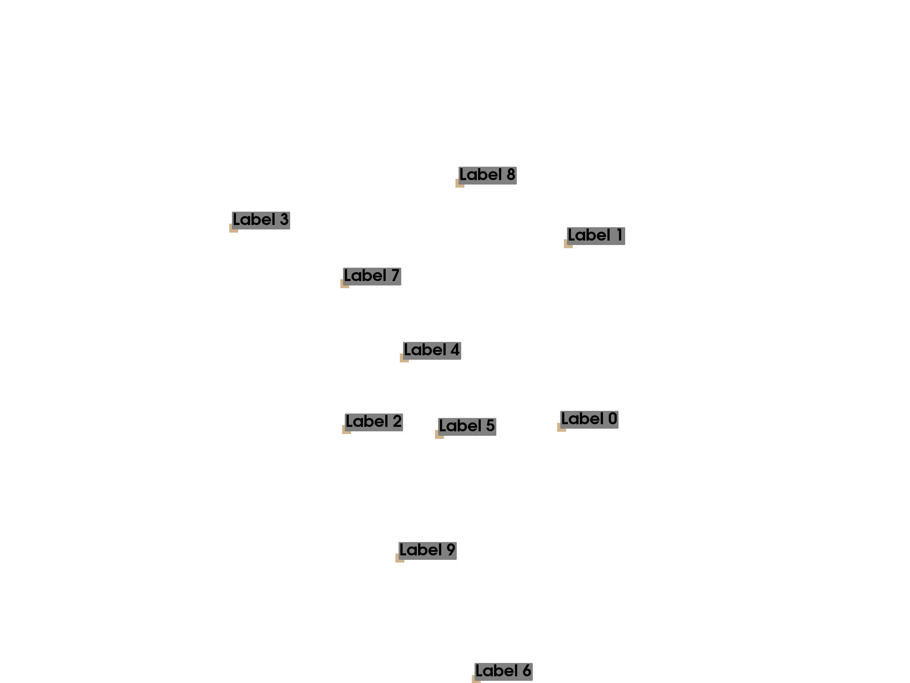
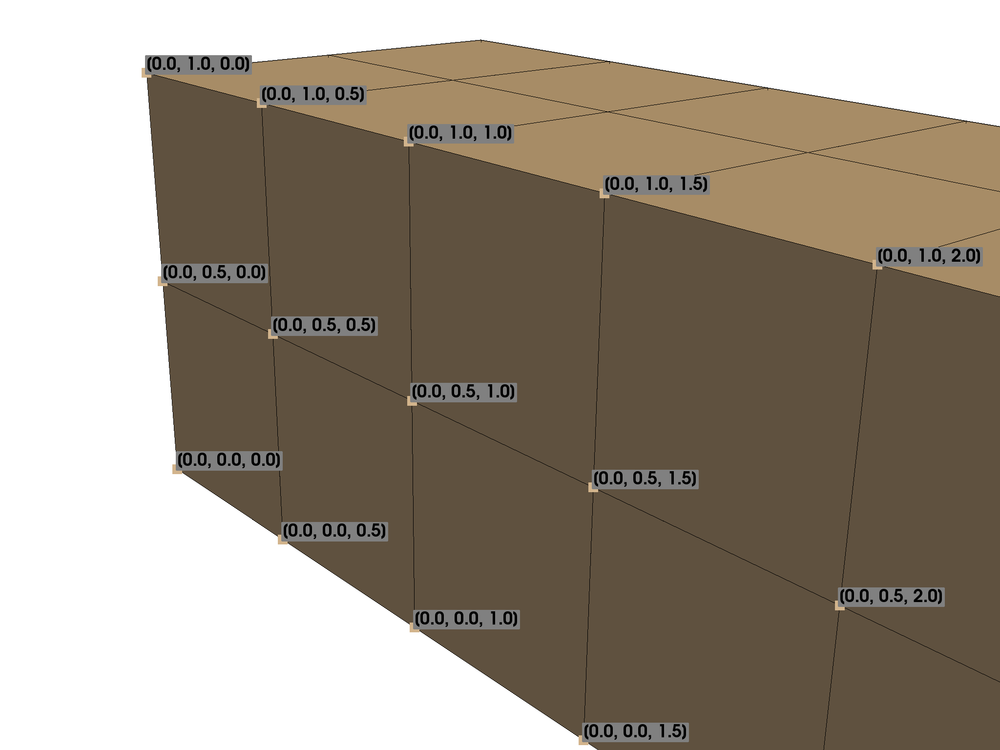
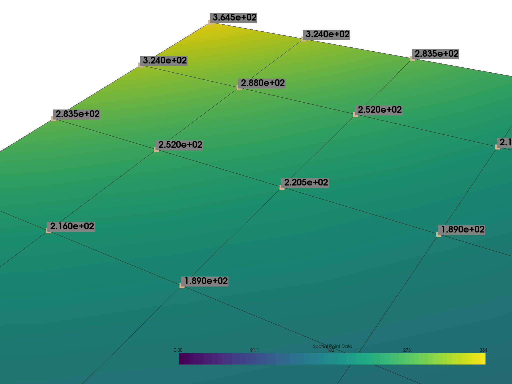

Note
Click here to download the full example code
Label Points¶
Use string arrays in a point set to label points
# sphinx_gallery_thumbnail_number = 3
from pyvista import examples
import pyvista as pv
import numpy as np
# Labels are not currently supported by the VTKjs conversion script
pv.rcParams["use_panel"] = False
Label String Array¶
This example will label the nodes of a mesh with a given array of string labels for each of the nodes.
# Make some random points
poly = pv.PolyData(np.random.rand(10, 3))
Add string labels to the point data - this associates a label with every node:
poly["My Labels"] = ["Label {}".format(i) for i in range(poly.n_points)]
poly
| Header | Data Arrays | ||||||||||||||||||||||||||
|---|---|---|---|---|---|---|---|---|---|---|---|---|---|---|---|---|---|---|---|---|---|---|---|---|---|---|---|
|
|
Now plot the points with labels:
plotter = pv.Plotter()
plotter.add_point_labels(poly, "My Labels", point_size=20, font_size=36)
plotter.show()

Out:
[(2.109195812397355, 2.0389722191783526, 1.8840671695467885),
(0.6266340071078309, 0.5564104138888286, 0.4015053642572645),
(0.0, 0.0, 1.0)]
Label Node Locations¶
This example will label the nodes of a mesh with their coordinate locations
# Load example beam file
grid = pv.UnstructuredGrid(examples.hexbeamfile)
Create plotting class and add the unstructured grid
plotter = pv.Plotter()
plotter.add_mesh(grid, show_edges=True, color="tan")
# Add labels to points on the yz plane (where x == 0)
points = grid.points
mask = points[:, 0] == 0
plotter.add_point_labels(
points[mask], points[mask].tolist(), point_size=20, font_size=36
)
plotter.camera_position = [
(-1.5, 1.5, 3.0),
(0.05, 0.6, 1.2),
(0.2, 0.9, -0.25)]
plotter.show()

Out:
[(-1.5, 1.5, 3.0),
(0.05, 0.6, 1.2),
(0.20936956903608547, 0.9421630606623846, -0.2617119612951068)]
Label Scalar Values¶
This example will label each point with their scalar values
mesh = examples.load_uniform().slice()
p = pv.Plotter()
# Add the mesh:
p.add_mesh(mesh, scalars="Spatial Point Data", show_edges=True)
# Add the points with scalar labels:
p.add_point_scalar_labels(mesh, "Spatial Point Data", point_size=20, font_size=36)
# Use a nice camera position:
p.camera_position = [(7, 4, 5), (4.4, 7.0, 7.2), (0.8, 0.5, 0.25)]
p.show()

Out:
[(7.0, 4.0, 5.0),
(4.4, 7.0, 7.2),
(0.8197048313256959, 0.5123155195785599, 0.25615775978927996)]
Total running time of the script: ( 0 minutes 4.267 seconds)